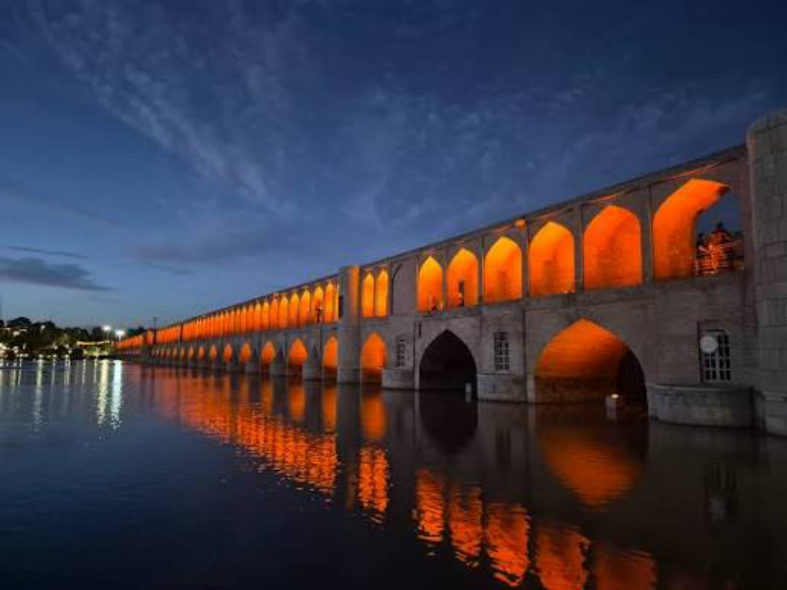
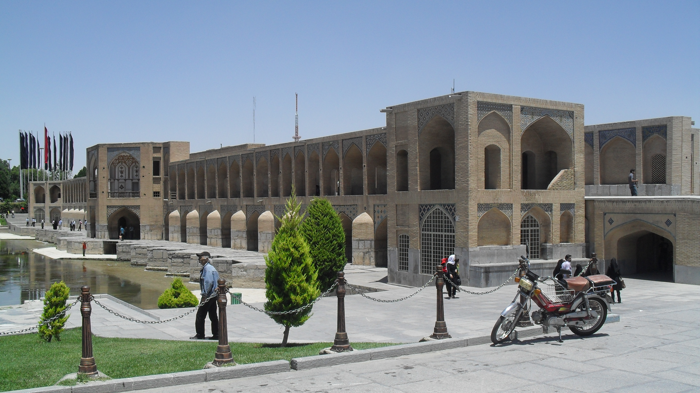
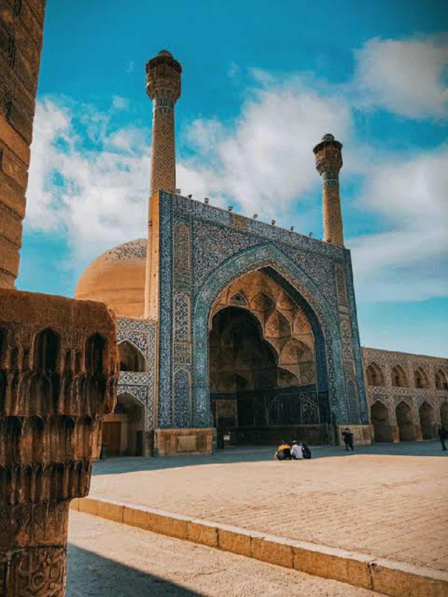
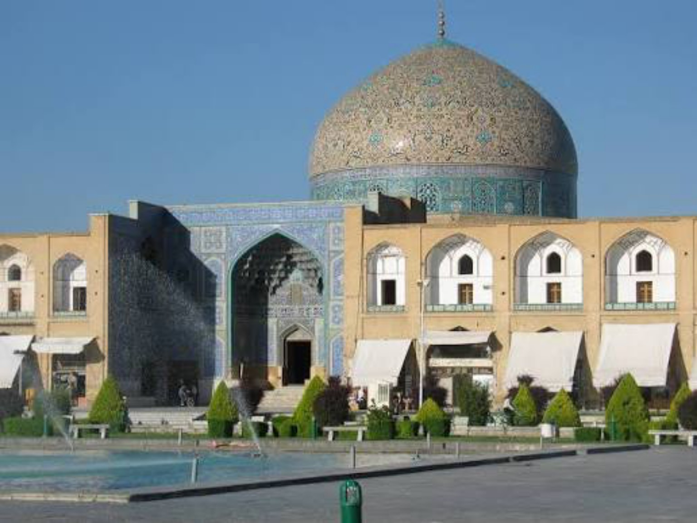

میراث جهانی یونسکو
میراث جهانی یونسکومیدان نقش جهان
میدانی باشکوه از دوران صفوی که مسجدها، بازار و کاخ عالیقاپو را در کنار هم جای داده است.
بیشتر بخوانید ←EXPLORE ISFAHAN
شش ایستگاه برای آشنایی با تاریخ و معماری نصف جهان
میراث جهانی یونسکومیدانی باشکوه از دوران صفوی که مسجدها، بازار و کاخ عالیقاپو را در کنار هم جای داده است.
بیشتر بخوانید ←
پل تاریخیپل معروف زایندهرود با دهانههای پیدرپی و چشماندازی خاطرهانگیز در امتداد رودخانه.
بیشتر بخوانید ←
معماری صفوی باغ ایرانی
باغ ایرانیکاخی صفوی در میان باغی تاریخی که به نقاشیها، تالار و ستونهای ایوانش شناخته میشود.
بیشتر بخوانید ←
کاشیکاری ایرانیمسجدی ظریف در ضلع شرقی نقش جهان که به گنبد و کاشیکاریهای دقیقش شهرت دارد.
بیشتر بخوانید ←
معماری چنددورهایمجموعهای تاریخی که لایههای گوناگون معماری ایرانی ـ اسلامی را در خود حفظ کرده است.
بیشتر بخوانید ←